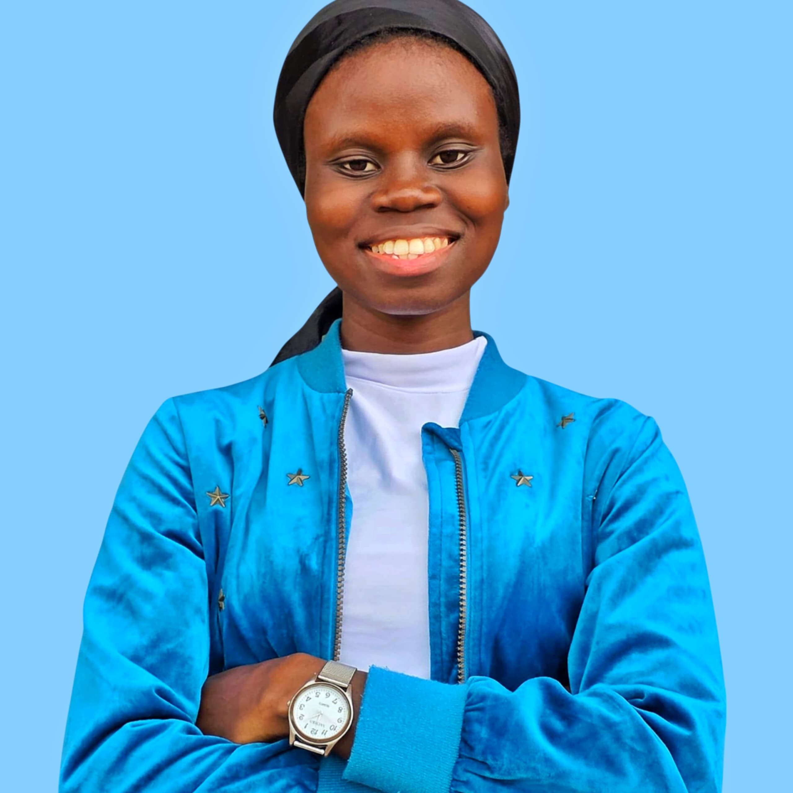

Anuoluwapo Odunewu
Web Developer

Summary
I am a 400 level student of Computer Science with Mathematics at Obafemi Awolowo University (OAU). I am intentionally equipping myself with the skills that will transition me into the Software Development space. I am passionate about learning.
Education
- Bachelor of Science, Computer Science with Mathematics (in view) - Obafemi Awolowo University (2022-2027).
Work Experience
Software Development Internship - ACE, Incubation Center, OAU.
- Gained hands-on experience building user-friendly web interfaces using HTML and CSS.
- Wrote clean and maintainable code.
- Built a YouTube Homepage Clone project with 24 videos.
- Worked in a semi-supervised learning environment.
Graphic Design Volunteering - Jebion Music Organization
- Created visually-compelling designs that communicated messages clearly and left lasting impression.
- Created designs that helped translate sound into visuals, capturing the tone, mood, and message of musical events.
Graphic Design - Champions' Leadership Global
- Used visual story-telling to communicate the brand's three core theme--purpose, leadership, and personal development.
- Created designs that inspired, engaged, and clearly expressed the brand's message, while promoting events that attract and grew the audience.
Skills
- HTML and CSS
- JavaScript
- Graphic Design
- English Grammar
Awards and Certifications
- Certificate of Completion - The SpringsGates Grammar School. (November 2025)
- Certificate of Excellence - Design Workshop Masterclass. (October 2024)
- Certificate of Service - Design Workshop Masterclass. (October 2024)
References
Others
© Anuoluwapo Odunewu. All rights reserved.